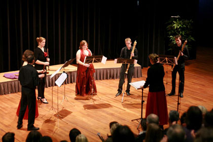

studentenblokfluitensemble

 concerten
concerten
Sambuca zal tijdens de tournee de volgende concerten verzorgen:
- woensdagavond 14 juli 2010: Enkhuizen, Zuiderkerk
- donderdagmiddag 15 juli 2010: Hoorn, binnenstad
- zaterdagmiddag 17 juli 2010: Amsterdam, binnenplaats AHM
ensemble
Zover bekend is Sambuca het enige studenten blokfluitgezelschap in Nederland. Deze ondervereniging van het Eindhovens Studenten Muziekgezelschap Quadrivium is in 1986 opgericht en wordt volledig gerund door studenten. Ondanks of misschien wel dankzij dit gegeven wordt er muziek op hoog niveau gespeeld. Sambuca is een vereniging die staat voor een goede mix tussen muziek en gezelligheid. Een aanrader voor ieder die het jammer vind om zijn blokfluit maar wat in de kast te laten stoffen.
Bij het uitzoeken van repertoire voor Sambuca wordt niets geschuwd. Zowel barok als de meest moderne stukken maken onderdeel uit van het repertoire. Componisten als Telemann, Bach en Vivaldi staan regelmatig op het programma, maar ook 'Report upon: when shall the sun shine' van Paul Leenhouts en 'The Party' van Willem Wander van Nieuwkerk zijn uitgevoerd.
dirigent
Sinds 1997 staat Sambuca onder de inspirerende leiding van Maartje van den BoomCoppes. Zij studeerde blokfluit, docerend musicus, in Maastricht bij Dorothea Winter en in Kassel (Duitsland) bij Winfried Michel. Zij sloot in 1993 deze studie cum laude af. Haar uitvoerend musicus diploma behaalde ze in Utrecht bij Heiko ter Schegget. Hiernaast studeerde ze schoolmuziek in Tilburg. Tijdens haar studies legde zij zich toe op het leiden van ensembles en koren. In 2005 volgde ze de Kurt Thomas cursus.
Maartje werkte jaren als blokfluit- en AMV-docent op diverse muziekscholen in Noord-Brabant. Vanaf januari 1999 is zij in dienst bij Factorium Tilburg als consulent en initieert, organiseert en begeleidt muziek- en dansprojecten voor het reguliere onderwijs. Maartje leidt regelmatig blokfluitgroepen o.a. bij de Limburgse blokfluitdagen, de dag van de muziek en bij Huismuziek.